Special Article Whose culture is it anyway?:
Special Article Whose culture is it anyway?:
Jaffna Monitor hellojaffnamonitor@gmail.com 77 No culture can live if it attempts to be exclusive. Mahatma Gandhi Background: The post- independence history of many countries that faced colonial rule has many commonalities. In the Indian sub-continent, having faced the dehumanising consequences of colonial rule together, the ‘Brown- sahibs’ - of all sides, created divisive narratives that enabled them to consolidate their positions within the power hierarchies of their communities. ‘WE had a unique and pure culture which was polluted, diluted or bastardised by THEM’ was the message given to the electorates, and this ‘US Vs THEM’ narrative pervaded all aspects of political discourse, periodically spilling over as large scale violence. Even though the minority communities bore the brunt of these violent outbursts, all segments of society suffered its multi-faceted consequences. It was easy to create a culture of nepotism, corruption, and economic mismanagement as all criticisms against this trend could be deflected and the blame shifted to ‘THEM’. This divisive narrative included falsification of history creating an illusion of multiple ‘pure cultures’ that were contaminated and degraded by the arrival of the others. All aspects of social life – religion, language, food habits, art, music and dance included, were seen through the prism of ‘US Vs THEM’. For example, the identical mixture of BY: Professor Mahesan Nirmalan MD, FRCA, PhD, FFICM University of Manchester Special Article Whose culture is it anyway?: Co-evolution of musical traditions in Sri Lanka

Jaffna Monitor hellojaffnamonitor@gmail.com 78 mung beans, brown sugar and spices when fried in oil in the shape of spherical balls came to represent the Tamil culture (‘Payaththam paniyaram’ or gaj;jk; gzpahuk;) but when shaped into a flat squares, triangles or rhomboids (Mung Kavung or uqx lejqka) came to represent a strong Sinhala culture and the differences were deemed irreconcilable. To any neutral outsider, the conflict between the groups was no different to the wars between the “little endians” and “big endians” in Jonathan Swift’s Gulliver’s Travels! The fallacy of this approach needs to be confronted if we are to truly appreciate the multi-dimensional, inclusive and inter- dependent manner in which history and cultures evolved. The musical history of Sri- Lanka provides a window of opportunity to do so, for the music of the land – practiced in all nooks and corners of the country, is truly a product of inter dependence and co- evolution. Traces of every form of music can be seen in every other form of music, if only we take the time and effort to look for these commonalities. Jim Sykes, a musicologist from the University of Pennsylvania refers to the aesthetic system that emerged across the island, among all its people as a system of ‘Musical Gift’ (The Musical Gift: Sonic Generosity in Post-War Sri Lanka, Oxford University Press 2018). In this way of thinking, “some sounds are meant to be given, in that they can be shipped and tracked as they move, given or bought and re- gifted by one person to another, and enjoyed through this transition but not construed as inherently expressive of the soul of the person or community or geographical location that offers it”. In other words, what Sykes implies is an open and seamless system where sounds and expressions have moved freely across all boundaries, accepted, adapted and adopted by individual practitioners. Given this general background, the rich tapestry that resulted in the island can only be described as something that co-evolved amongst all the island’s inhabitants. The Musical gifts came from far and wide – North and South India, Africa, Europe and the Far East, and these gifts were accepted and indigenised. The music of the Vedda: The Vedda (Ntlu; or jkaksh,e;af;da) community is considered to be the indigenous people of the island nation. Their history predates 6th century BCE and are the hunter-gatherers who lived in the forests and caves. Genetic studies have found that the Vedda are genetically closer to some Indian tribes than to Sinhala or Sri Lankan The identical mixture of boiled Mung beans, brown sugar and a variety of spices when fried in the shape of flat squares, triangles or rhomboids came to be known as ‘Mung Kavung’ and when fried in the shape of spherical balls came to be known as ‘Payaththam Paniyaram’ with strong cultural connotations amongst the Sinhala and Tamil groups respectively. (Adapted from Google Images with Thanks)
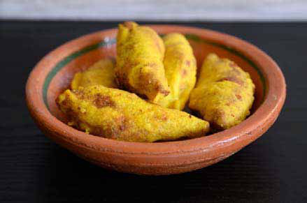
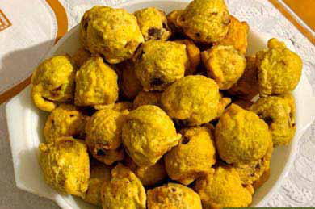
Jaffna Monitor hellojaffnamonitor@gmail.com 79 Tamils and as such they could be considered to be part of an ancient group(s) of people who lived in the subcontinent and surrounding islands. The Vedda communities, displaced from around the entire country, currently live in small villages scattered around the Eastern and North-Eastern slopes of the central hills and in the North Central province. Dambana, Rathugala, Pollebedda, Dalukana, Henanigala, Vakarai, Muttur, Anuradhapura and Panama are some of the areas where the Vedda communities currently live in relatively small numbers. The early musical practices in the Vedda community is hard to determine, even though it is safe to speculate that simple wind instruments, percussion instruments and string instruments may have been in use. Ramayana refers to the use of Yarl (or the harp) and the Veena in ancient Lanka in the royal courts and, there is no reason to believe that similar instruments may not have been used by the ordinary citizenry too. Drumming certainly has been practiced extensively within the Vedda communities for purposes of communication, entertainment and in religious ceremonies. The shapes of these drums amongst the different Vedda subgroups sheds an interesting insight into the importance of external influences in shaping these drums. Whereas the communities that lived in close proximity to the Tamil populations in the East – such as Vakarai, use drums that are similar in shape to the ‘Tamilised’ drum – the ‘Mattalam’ (kj;jsk;), others who lived in close proximity to established Sinhala communities in the more central regions tend to use drums that resemble the ‘Davula’ (ojq,) or the ‘Gata Beraya’ (.eg fnrh) – commonly used by Sinhala musicians (Sykes 2018). This illustrates, how the musical practices of a neutral community such as the Vedda, who were uninfluenced by the political rhetoric of the urban middle classes, was shaped by the surrounding environment through the seamless flow of musical traditions between people who live in close proximity. Saying that the Vedda music has been shaped and influenced by the musical practices of other communities does not deny the existence of musical traditions within the Vedda community or undervalue the quality of those native musical traditions. But rather, it means that these traditions and practices have been in a state of continuous flux through sonic donations and Musical giving.
The Parai and the Bera: Parai (giw), is the traditional drums of the Tamil people living in South India and in Sri Lanka. Until the arrival of the Thavil to Sri Lanka in the latter half of the 18th century, the Parai music was at the heart of communal events – socio cultural as well as religious. The communities that played the Parai once held a more respected status within the Tamil society which was progressively eroded by the pernicious effects of the caste system inherent within Hinduism. As a result, the status of Parai, and other stigmatised drums such as ‘Urumi’ (cWkp) was significantly downgraded along with that of the community who performed the drumming. This down grading was more pronounced in the Northern Province than in either the Eastern Province or amongst the Tamils living in the Hill country – referred to as the ‘Malaiyaga Thamilar’ (kiyaf jkpou;). Despite such distortions, Parai music was in widespread use in Hindu temples all over Sri Lanka – including those dedicated to Shiva. Its current use in temples is however limited to the non-Agamic temples dedicated to Shakti, Amman or the mother goddess. In the Eastern province however the Parai music forms an integral part of a form of street drama, commonly known as ‘Parai Mela Koothu’ (or giw Nks $j;J) – a tradition of dancing with the Parai and a short double reed wind instrument called the Sornali. The versions of drums used in this context would include the traditional Parai, Udukkai (or cLf;if),
Jaffna Monitor hellojaffnamonitor@gmail.com 80 Urumi (a drum similar but slightly longer than the Udukkai), maththalam (kj;jsk;) and Tappattam (or jg;gl;lk;). Koothu, incidentally is a form of story-telling using music and dance as the medium of expression. This genre of street performances is known as ‘Theru Koothu’ (njU$j;J) whose origins can be traced to the Sangam period (300BCE- 300AD). Many such Koothus, usually named after the lead character in the story – Kaman Koothu, (fhkd;$j;J), Kathavarayan Koothu (fhj;jtuhad; $j;J) etc., are integral to the Tamil culture in Sri Lanka, whose influences have been far reaching, extending beyond the Tamil community. Similar percussion instruments – known as the Bera, have also formed an important component of social life amongst the Sinhala speaking communities in Sri Lanka. Broadly speaking, three distinct forms of Bera traditions can be identified in Sri Lanka (though a musical purist may be able to name many more different traditions). These are the Low Country (or Pahata Rata, approximately between Horana to Matara), the Up Country (Uda Rata, or the central hill region surrounding Kandy) and the Sabaragamuwa – an intermediate zone around Ratnapura. Whereas the Yak Bera (a straight drum with lower tone) is integral to the Low Country drumming, the Gata Bera (with tapered ends and a higher tone) is mostly integral to the Up Country drumming. Both the Yak Bera and the Gata Bera are played with the two hands. The drum that is indigenous to the Sabaragamuwa region is the ‘Davula’, which is played with one hand and a stick. Locally available wood (Jack, Kohomba and Ehela etc.) and animal hide (buffalo, cow, goat, monkey or monitor lizard etc.) are used in drum-making. According to Sykes, “All three major Berava drums are performed in highly hallowed Buddhist contexts in their respective regions, such as chant ceremonies (pirit), peraheras and rituals for deities (deva tovils) held at shrines (devales) ”. In this context, the term ‘Bera’ refers to the drum and the ‘Berava’ refers to the caste of the drummers. The Berava usually perform the role of ritual specialists, and sounding the drums is an integral part of these rituals. The rituals are usually aimed at seeking the blessings of deities (Deva tovils) or wading off evil spirits (Yak tovils) who can cause harm – including disease, pestilence, drought and famine. Traditionally, the Berava caste was assigned a subservient position within the social hierarchy, despite the Representative scenes from a standard Tamil Koothu. A: Stage play and B: Background singers with a variety back-up instruments including the drum and cymbals. Adapted from Wikimedia Commons under the Creative Commons License.
A
B
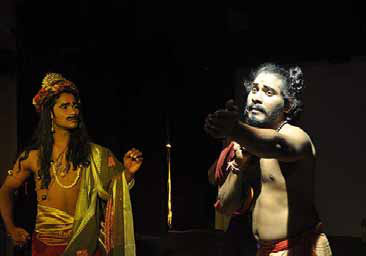
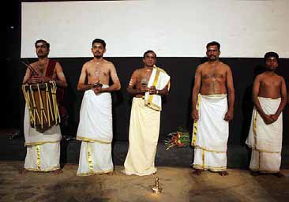
Jaffna Monitor hellojaffnamonitor@gmail.com 81 The different types of drums used traditionally in Sinhala Berava ensambles. A: Gata Beraya, mostly associated with the Kandyan region; B: Yak beraya, mostly associated with the low country; C: Davula Beraya, mostly associated with the Sabaragamuwa region and D: Thammattama. Source: Adapted from Google Images with thanks. rejection of the caste system within Buddhism. The Up Country Berava are considered superior to their Low Country counterparts as the Kandyan rituals focus on gods, whereas the Low Country rituals focus on appeasing demons and evil spirits. In addition to drumming, the Berava people also function as astrologers and folk healers well versed in Ayurvedic and other traditional medicines. Despite the multitude of roles played by the Berava people, the main societal role assigned to them was to honour the king and other divine sovereign powers through musical offerings. According to Sykes, the Berava drumming prevailed within a wider context of musical giving. As a result of the close proximity between Buddhism practiced in Sri Lanka and the four deities (‘Hatara varam deviyo’ – Vishnu, Natha, Pattini and Kataragama) who held delegated authority (varams), the Berava music had multiple intersections with Hindu gods and rituals that were strengthened during
A
B
A
B
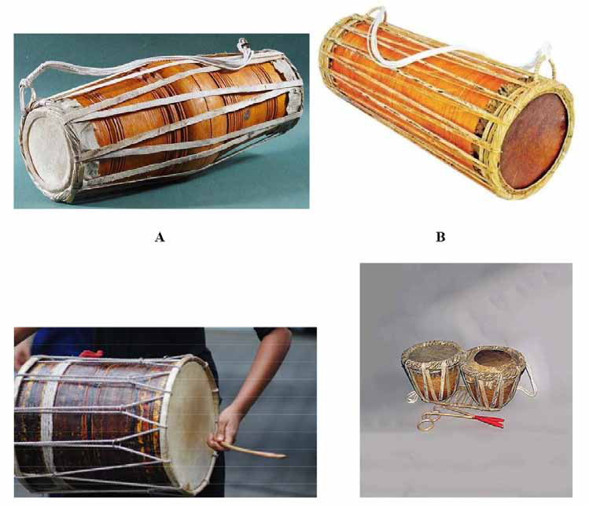
Jaffna Monitor hellojaffnamonitor@gmail.com 82 the times of the kings (with Hindu roots) who ruled the Kandyan and Kotte Kingdoms. The structural similarities between the Parai and the Davula; the use of other similar instruments such as the ‘Thammattama’ and ‘Tappattam’; the structural similarities between the Gata Bera and the Mrdangam drum played in carnatic ensembles; the common use of Udukkai and Mattalam within both communities and the subservient position assigned to the Berava and Parayar communities strongly imply that these musical and social traditions have co-evolved and form part of a common heritage. Arguing for a common heritage merely acknowledges the fact that the development of these traditions are multi-faceted and does not imply the absence of rituals or musical traditions that are indigenous to each group.
The Koothu and the Nadagam Traditions:
It is fair to say that the art of story-telling
using music is common to the Sinhala and
Tamil speaking communities. In fact, one
may reasonably argue that the traditions
that underpin Tamil ‘Koothu’ and Sinhala
‘Nadagams’ are two sides of the same coin and
the observations made by Sykes in this context
are reproduced below.
“Koothu embodies a geographically broad
history of musical giving from Tamil
Christians to Tamil Hindus, from Tamil
speaking Christians to Sinhala speaking
Christians and from Sinhala speaking
Christians to Buddhists and secularists. The
genre emerged from South Indian “street
theatre” (terukoothu or njU$j;J) that was
adopted by Jesuit priests for their Portuguese-
derived Passion plays and by Tamil Hindus
for performances of Hindu epics……From
there the genre travelled down the west coast
to Mannar and Chilaw where the Sinhala
speaking Christians turned it into a genre
called Nadagam…... The Nadagam was then
popularised as a secular genre by Phillippo
Singho, whose well-known play Ehelapola
Nadagama was produced in 1824…..Dr
Edmund Peiris (former Bishop of Chilaw)
argued that the Sinhala Nadagam dates back
at least to M S Gabriel Fernando’s staging of
Raja Tun-kattuwa (rdc ;=kalÜgqj) in Chilaw
in 1761, a Nadagam modelled on the Tamil
Natakam (i.e Koothu) ‘Muvirasakkal natakam’
or %-,uhrhf;fs; ehlfk;, about the birth
of Christ. Nadagam’s popularity declined in
the late 19th century in the wake of visiting
Parsi theatre troupes from Bombay, who
bequeathed a local genre called ‘Nurthi’ that
would become an important site for a renewed
Sinhala identity…… The music in Sinhala
Nadagams was heavily Tamil in flavour,
drawing on South Indian carnatic music and
the Koothu, and it used the same drum as the
Koothu, which the Tamils call maththalam (or
kj;jsk;) and the Sinhalese call maddalaya or
Demala Bera (Tamil drum)”.
Interests in Sinhala Nadagam resurfaced in
the 1950s with the staging of ‘Maname’ in
1956 and ‘Sinhabahu in 1961 by Professor
Ediriweera Sarathchandra. Whereas ‘Maname’
is based on the Buddhist Jataka story about
the former life of the Buddha, ‘Sinhabahu’
is based on the legendary forefather of the
Sinhala people. Sarathchandra was an artistic
innovator who drew from global theatre
including Indian and Japanese theatre and
true to his academic integrity acknowledged
that his Nadagams were rooted in the Tamil
Koothu. He is reported to have travelled
to areas in the country where Koothu was
practiced and “to learn about Koothu for his
plays” (Sykes 2018).
The word ‘Nadagam’ itself was derived from
the Tamil word ‘Natakam’. As such, the
Nadagams and Koothus that have given joy
to countless people across all ethnic divides
- through multiple generations, have very
similar roots. Academics such as Professor
Mounaguru (Eastern University) and veteran
Jaffna Monitor
hellojaffnamonitor@gmail.com
83
film director Dr Dharmasiri Bandaranayake,
have used this concept of common heritage
to build understanding and reconciliation
between communities during the period of
conflict.
.
The Carnatic and Hindustani Traditions:
Ariyapala in his thesis to the University of
London (M B Ariyapala, Society in Mediaeval
Ceylon 1956), provides a detail account of
the state of society in the island nation in the
13th century as depicted in the Saddharma
Ratnavaliya and other literature from the 13th
century. Parakramabahu II, was the leading
figure from this period, and Ariyapala has
the following to say about his reign. “The
Chulavamsa gives a glowing account of his
life and activities. It refers to his crushing of
the alien foe, after which he set himself to
bring about prosperity of Lanka. He built a
temple for the Tooth relic near the palace, and
having deposited the relic there, held a great
Scenes from the famous Nadagams by Professor Ediriweera Sarathchandra. A: Scene from
Maname and B: Scene from Sinhabahu. Images obtained from Google Images with thanks
A: Mr Dharmasiri Bandaranayake, a veteran film director and Professor C Mounaguru, are two
pioneers who developed the theme of ‘common heritage’ in Sri Lankan theatre and used it as a bridge
between the communities during the conflict - despite significant challenges to personal safety.
A
B
A
B
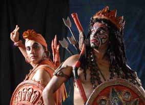
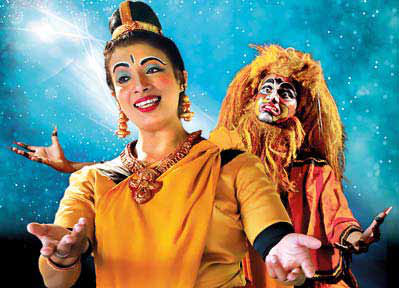
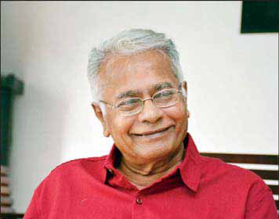
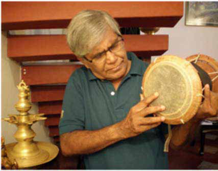
Jaffna Monitor hellojaffnamonitor@gmail.com 84 festival in its honour. He cleansed the ‘church’ of corrupt practices, expelled evil doers and brought erudite monks from India to restore order. The Chulavamsa, describing his work in this respect says: ‘All the corrupt groups of bhikkhus …….were dismissed from the order, and thus purified the order of the perfectly enlightened one. Then the king sent many gifts to the Cola country and caused to be brought over to Tambapanni many respected Cola bhikkhus who had moral discipline and were versed in the three Pitakas”. In discussing the religious environment at the time, Ariyapala is very clear that Buddhism was the dominant force amongst the royal households as well as laity and that erudite monks played a prominent role in society. He however also makes the following observation. “Buddhism was so much of a sophisticated philosophy…” and as a result “the common man, grasped various non- Buddhist beliefs and practices from Hinduism and Brahmanism” (M B Ariyapala, Society in Mediaeval Ceylon 1956) in dealing with their day to day mundane challenges. These accounts clearly illustrate an environment of harmony and co-existence where free exchange of ideas and practices were possible. In discussing music and dance in the 13th century Ceylon, Ariyapala states “there is not the slightest of doubt that Kalas appertaining to music – vocal (gita or .S; or rhfpj;a ,ir), instrumental (jdÈ; or thj;jpa ,ir) and dancing was widely cultivated”. The Vina was played very frequently and other instruments mentioned include the several types of Bera (or giw), Mattalam (or maddala or the Tamil drum), mrdangam, Udukkai, Kulal (or flute), horanava and tambour (or the Tampura) etc. The Thupa-vamsa even mentions – amongst a list of many other musical instruments, the nāgasara (ehfRuk;), kombu (nfhk;G), kaitalam (ifj;jhsk;), ottu (Cj;JFoy;) as instruments that were in use at the time. It is clear that many of the instruments listed above are now identified with traditional Tamil music and its widespread use in 13th century Ceylon is relevant. Given this integrated environment where the ‘Sri Lankan’ music flourished in the 13th century through the interactions between ‘Sinhala’ and ‘Tamil’ forms of music, it is surprising that attempts were made in post- independence Sri Lanka to identify Hindustani music as the basis of Traditional Classical Music of Sri Lanka. All existing evidence suggests that the connection with Hindustani music commenced only after the period 1930-1950, when a number of musicians from Sri Lanka visited the music academy Shanthinikethan founded by Rabindranath Tagore to be trained in Hindustani Music. The elevation of this genre of music, which arrived in the country only in the 20th century, as the traditional music of the Sinhala people must therefore be seen as an imperative that existed amongst some middle class pseudo- intellectuals to establish a “considerable ancestral and geographical distance between Sinhalese and Tamil cultural traditions” (Jim Sykes 2018).
Conclusion: The intention of this article is not to provide a complete overview of all musical traditions that form part of the cultural tapestry of Sri Lanka. The stark gaps in the narrative presented - including the omission of popular musical traditions such as the ‘Baila’ and cinema-music, is acknowledged. However for the purpose of presenting a narrative of co- evolution and joint heritage, it was necessary to stick to classical art forms and it is hoped that the case presented is adequate to initiate greater discussion and debate. Such a debate is essential if we are to appreciate the historic role music has played in Sri Lanka in binding communities together. Acknowledging this historic reality and creating such an inclusive narrative is a pre-requisite if the country is to move forwards and realise its true potential.
Jaffna Monitor hellojaffnamonitor@gmail.com 85 Story D arkness smothered the sky in clumps. It seemed as if the vanguard of the night was spreading its tentacles while murmuring a lullaby song under its breath. “Chē! After all, I shouldn’t have been so late.” The thorn of guilt pricked at her heart. She was sweating profusely. She stepped over the threshold at the main entrance into the front yard and glanced at the hut. Having acquiesced to The Fence Translated from the original Tamil short story vēli (Ntyp) from the 1992 collection of short stories titled makkattuc cālvai (kf;fj;Jr; rhy;it) by S.L.M. Hanifa. Translated by: Eḻuttukkiṉiyavaṉ (vOj;Jf;fpdpatd;)
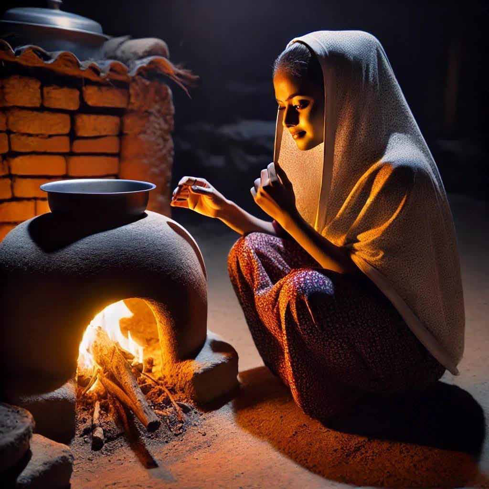
Jaffna Monitor hellojaffnamonitor@gmail.com 86 the beatific silence of the night, it lay there listlessly, like the life of a widow. The passionate, youthful feelings that had lain dormant all this time broke through the sentiments of pity and snowballed into something greater. ‘At least for today, let this lamp be lit in the hut,’ her heart resolved. As her footsteps drew closer, a voice stirred to life from within the hut. “Is that you, Rāyilā?” “Yes! Yes!” “Why so late today?” “What can I do? How can I always come home early? Do I have a husband who's gathered and bundled the firewood for me?” Rāhilā snapped at him. The man who was curled up in the plain straw mat regretted asking. He struggled to bury his hurt deep within his chest, only for it to erupt as a red-hot sigh. Rāhilā took the edge of her saree to dab away the beads of sweat on her face. The nagging feeling that her response had been tainted with unnecessary cruelty played hide-and-seek within her. With a sense of duty, she lit the lamp, and a dull light spread within the hut. In that light, Rāhilā’s eyes searched for the curled-up figure. It was not an unfamiliar figure. It was the figure that occupied the place of ‘Rāhilā’s husband’ for the past five years. The wellspring was breached. Compassion trickled forth! ‘The poor soul,’ her heart was anguished. “Are you ok?” The conversation they just had completely slipped from her mind. His heart became light as a feather; he was like a toddler scrambling into his mother’s lap after being punished. “Rāyilā! I think I have a fever today. My chest feels tight, too, and I feel weak. Make me a little porridge with some broken rice.” It took a Herculean effort for him to finish uttering these words. Immediately, he was stricken by the thought of being on the receiving end of her sharp tongue with a retort like, ‘The Lord and Master demands porridge now, does he?’ For the past six or seven months, snapping at him no matter what he said had become second nature to Rāhilā. But today was different. Without a word, she complied with his request and began making porridge. The clay stove caught the spark from her matchstick and began belching smoke. Rāhilā puffed up her cheeks and blew into the stove, wiping the smoke from her eyes. Her efforts were rewarded when a flame abruptly leapt up and spread. Rāhilā’s husband thought her body shimmered like gold in the light of that little flame. He was sitting up with his back against the hut wall, his solitary leg stretched before him. The pain weighed heavily on his chest, making him pant. The pillow that supported his neck and head brought him comfort, but gazing at the exquisite beauty of his wife from this new angle sprouted a thorn bush in his heart.
Jaffna Monitor hellojaffnamonitor@gmail.com 87 As the fire took hold in the stove, Rāhilā walked back into the living space of the hut. The flowery silk saree and the velvet blouse they had bought for her wedding lay abandoned in the storage box. She picked them up with newfound fondness and laid them out to air on the coir clothesline.
A soft light began to spread, heralding the rise of the crescent moon. In her heart, too, an unfamiliar dull light began to spread. Rāhilā returned to the clay stove and crouched before it. They did not exchange a single word, but these two hearts often communicated more in silence than in words. Rāhilā rinsed the rice in the arikkimilā, the metal pot for cleaning rice, to remove gravel, then poured it into the pot on the stove, and began mixing it. He could not take his eyes off Rāhilā. One cannot just introduce Rāhilā merely as a woman. She possessed the allure of a mango that had ripened on the tree amidst a cluster of others. When she smiles, it is impossible to take one's eyes off the beautiful dimple that forms on her left cheek. He always thought she was the desert flower upon which God chose to imprint His unique stamp of beauty.
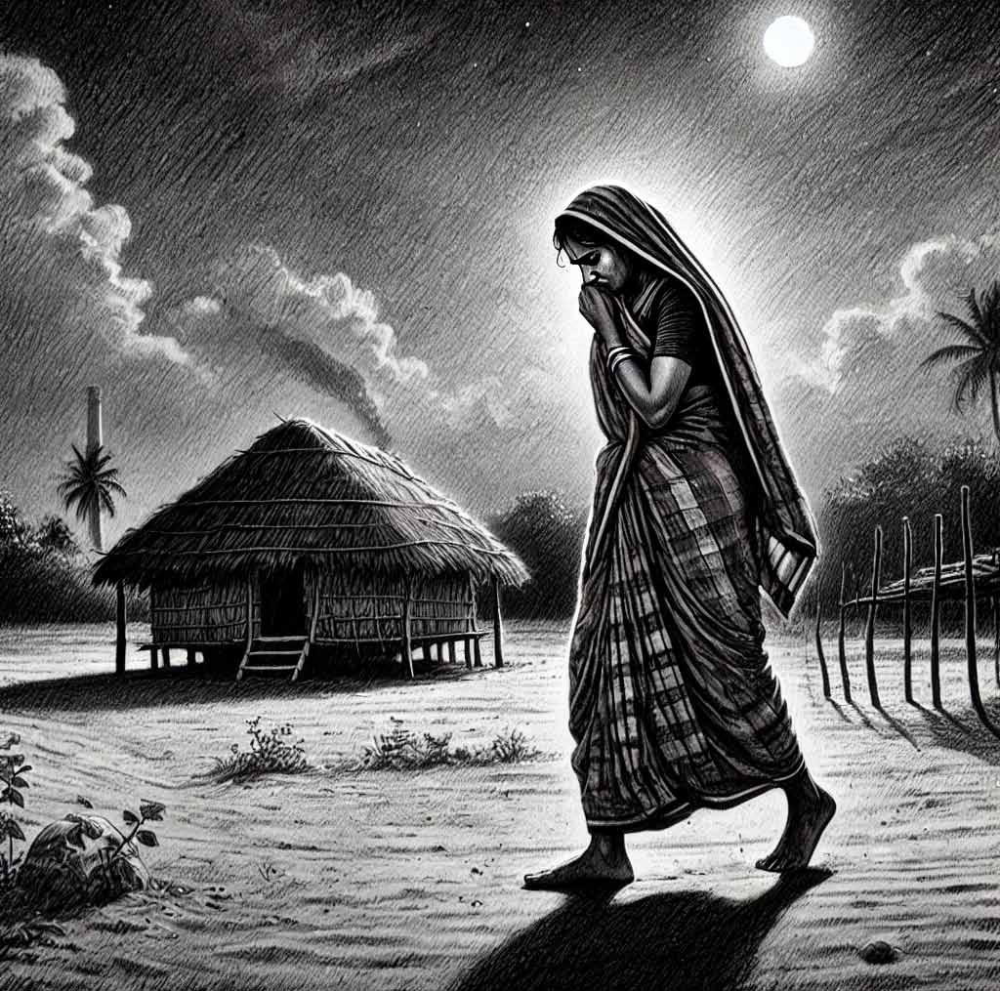
Jaffna Monitor hellojaffnamonitor@gmail.com 88 She was his cross-cousin, which meant she was an eligible match for him in a society that permitted such marriages. Beguiled by her beauty, he courted her persistently. When he finally won her hand, he felt the pride of having all the world's riches heaped at his feet. He felt a few inches taller, his chest fuller. As a lumberjack, when he walked to and from the jungle carrying small woven baskets full of snacks—the hallmark of a new groom—he exuded a unique majesty, like an emperor surveying the domain of his heart. It was like the captivating light show of a rainbow, or the exquisite beauty of a water droplet shimmering like a pearl on the edge of a blade of grass… yet he was a simple, uneducated man, lacking the poetic imagination or the eloquence to describe the incredible life he had been gifted. One day, he returned from the jungle, hobbling on his right foot. He laughed it off, saying a branch had struck his knee while he was chopping down a tree. Perhaps he believed that Rāhilā’s charming smile would be the soothing balm to heal his injury. But reality grabbed that belief by the horns and shook it mercilessly. The wound festered, dragging him to and from the Puḷiyantivu hospital for months, until his right leg was amputated, leaving him confined to the straw mat at home as a permanent patient. In the process, their meager possessions and the few pieces of gold that once glittered on her body all vanished. Rāhilā built a hut on a plot of sandy, barren, government land and began her life, hoping to find fulfillment by being there for her husband and caring for him. The satisfaction she once found in realizing the dreams of her youth vanished into thin air, like a dream itself. Her youthful yearning left her feeling exposed, with a bitter taste at the back of her tongue. She wore her status as a wife like armor and joined the ranks of women who earned a living on their own by collecting and selling firewood. This arduous life continued for a few years, withering the flower of her life, petal by petal. But today, the fangs of the problem have risen up like a giant apparition. The porridge boiled on the stove. The events that transpired earlier that day also smoldered and spread their tentacles. Rāhilā had gone to the water’s edge to wash up. When she returned, carrying a bundle of firewood, the horizon was decorated in crimson to bid farewell to the sun. Her first thought was, ‘Today is the day to deliver firewood to the village headman Ali’s house.’ The thought of that house made her shiver involuntarily from embarrassment and shyness. She threw the bundle of firewood by the kitchen and drew water from the well to quench her thirst. Just then that village headman’s driver, Karim, appeared from the direction of the garage. Over the past eight months, it had become customary for him to await her arrival, and for her to await his. They both knew this, but neither expressed it in words. The light that shone through the gap in the open garage door painted Rāhilā in a golden hue. She squinted and asked, “Have they gone somewhere?” “Today is their nārisā at the mosque, offering free meals to the faithful. That is why the boss and his wife are out.” As his mouth answered mechanically, his eyes lingered on her blouse, taking in the sight of her youthful, buxom figure that the fabric struggled to contain.
Jaffna Monitor hellojaffnamonitor@gmail.com 89 The complete self-realization struck her like lightning. She regarded her own body with newfound fondness. For four years, her husband had not been able to worship this body—the body that resembled a freshly bloomed flower, made firmer and stronger by the hard daily labor… Shyness and modesty; Fury followed instantly! She felt that the way he was undressing her with his eyes was obscene. Yet at the same time, a certain titillation tantalizingly tickled her. In that moment, their eyes exchanged the timeless emotions surging within them. The ecstasy born of forgetfulness was shattered by the birth of a sudden realization. The faint memory of her husband lying in the cottage. “Tell the headman that I have brought the firewood. Please give me some money if you have,” she mumbled each word hesitantly. “OK, come inside!” Karim closed the door further as he went back into the garage. Rāhilā’s suppressed emotions, long resigned to regarding the corporeal pleasures of youth as a mere mirage, began to bubble up whenever she saw him. In the beginning, her husband’s kind face and his disability joined forces to steady her wavering resolve. But as time went by… Whenever she lay down with her husband, Karim’s handsome face and his constant smile began to weave through her imagination as cross threads. Eventually, the fortress was completely breached. The silent pleasure of offering her body to Karim in her imagination had begun to pervade her entire being. She realized that Karim was inviting her in to take advantage of this rare opportunity for them to be together alone. She followed in the footsteps of his desire and entered the garage. Inside, a beatific silence connected them. They were so close that they could feel each other's breath. He looked at her as if overwhelmed by the urge to drink in her beauty with his eyes alone. “Are you going to swallow me?” she teased him with a smile. “Rāyilā! I know your situation. I tried to talk to you so many times. But today I finally got the opportunity. Tell me if you agree.” Until now, it had been Karim’s gaze that gave her the impetus to want to escape the prison of her anguished life. Now the third person has become the second person, speaking to her directly. A desperate hope budded in her heart and slowly began to grow. “If you promise in the name of Allah that you won't forsake me, I will follow you.” The words burst through her lips, surprising her. “Rāyilā!” he exclaimed as he embraced her tightly fulfilling his long-held desire. She lost herself in his embrace, powerless to resist his hands that were moving downwards from her waist. Muffled voices from the street outside reminded them that the garage they were in was not isolated from human habitation. “What if the headman returns abruptly?” she hesitated. “I, too, forgot. It is indeed time for them
Jaffna Monitor hellojaffnamonitor@gmail.com 90 to return. Take the money for the firewood directly from him. We don’t want to arouse any suspicion. But keep this!” He thrust a five-rupee note into her hands. She hesitated again.” “From now on, everything I earn is for you,” he forced the rupee note into her palms. She relented and took it. “Rāyilā! Don’t forget. I’ll wait for you by the banyan tree just as the early morning train blares its siren.” Until now, throughout this interaction, she had remained like a motionless statue. Now she hung her head to indicate agreement. Her legs started walking away. Rāhilā took the porridge off the fire, poured it into a bowl and began cooling it down. The siren from the paper mill blared, filling the entire area with its shrillness. Rāhilā looked at her sleepy husband and said, “Here, it is almost ten o’clock. Get up and have some porridge before you sleep…” He slurped the porridge while leaning against the thatched coconut-leaf fence – “Rāhilā you suffer because of me. But God will not make you suffer forever. One day you will see your dawn.” He washed his hands and curled up on his mat once again. The oil lamp belched thick smoke. A cluster of dark clouds slowly consumed the moon, which had reached its zenith. The mist covered everything, as if a white silk awning had been draped over the world. Rāhilā could clearly hear the first notes of birdsong welcoming the auspicious dawn. She went to the well to do her morning chores. The image of Karim waiting for her by the banyan tree filled her mind, spreading like a wall-to-wall carpet. She retrieved the flowery silk saree and velvet blouse from beneath her mat and put them on, admiring the completeness of her own beauty. Finally, out of habit, she glanced through the gap in the door – her husband’s hands, anemic from the disease that was consuming him, lay facing upwards in desperate appeal to God. Teardrops welled in his eyes and slithered down his cheeks like a necklace of pearls. His dry lips parted… “My creator! Forgive the sins I committed knowingly or unknowingly and save me from damnation, Rahumān! Have mercy on my wife, relieve her from the trials and tribulations she suffers because of me. Grant a good life at least to her, Rahmān!” Rāhilā felt unable to move, as if her feet had sunk roots into the ground. She thought of her husband who, despite being reduced to the state of a worm squirming in the mud, still showered her with love and compassion… A newfound courage and resolve enveloped her. She secured the five-rupee note in a knot at the edge of her saree. If she went to the village headman Ali’s house, she needed to return it to Karim. An old pot climbed on to the new fire she made on the stove.